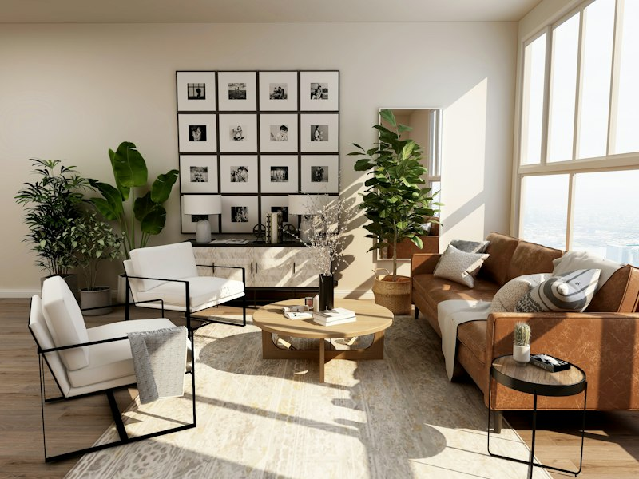

Space Planning
Consider the layout, relationships between rooms, circulation, and intended use of each space to create effortless daily transitions and functional harmony.


Residential architecture is a personal dialogue between human lifestyle, site conditions, spatial needs, and practical requirements. A well-considered home responds to how families live, gather, work, and rest—balancing communal connection with quiet seclusion through intuitive room relationships, purposeful proportions, and natural transitions to the outdoors.
At Artech Design (Aspirations Architects Engineers), our practice draws on over three decades of integrated architectural planning and structural engineering in Chennai and across South India. We approach every residential project with disciplined consideration for climatic orientation, prevailing breezes, thermal comfort, and durable construction methodologies suited to long-term living.
Harmonizing building orientation, sun angles, and prevailing airflow to enhance natural ventilation and passive cooling.
Selecting climate-appropriate materials, resilient finishes, and sound structural engineering that age gracefully with minimal maintenance.
Essential architectural principles and practical considerations that guide the conceptualization and development of residential spaces.
Consider the layout, relationships between rooms, circulation, and intended use of each space to create effortless daily transitions and functional harmony.
Consider how daylight, openings, orientation, and ventilation requirements may influence the design, subject to site and project constraints.
Consider suitable materials, finishes, durability, maintenance, and the intended visual character to ensure lasting quality across changing seasons.
Consider privacy, accessibility, storage, movement, and the needs of the intended occupants to balance shared social spaces with restful personal retreats.
An illustrative overview of potential residential building categories demonstrating the application of our architectural and engineering capabilities.

Thoughtfully planned private residences tailored to specific site conditions, lifestyle patterns, family dynamics, and personal architectural expressions.

Distinctive independent residences featuring expansive volumes, generous private courtyards, and seamless transitions between indoor and outdoor living areas.

Multi-dwelling residential developments planned for spatial efficiency, structural integrity, regulated acoustic comfort, and secure circulation.

Integrated residential interior spaces harmonizing customized cabinetry, natural tactile surfaces, ambient lighting, and functional ergonomics.
A structured four-stage architectural framework guiding each residential commission from initial conversations through to documentation and project delivery.
Understand the client's needs, intended use, site information, family lifestyle requirements, and key architectural priorities.
Explore suitable spatial arrangements, functional room relationships, massing studies, and initial design concepts tailored to the site.
Refine the proposed design based on agreed requirements, material selections, structural considerations, and environmental factors.
Support the agreed project process through relevant documentation, technical working drawings, and delivery stages, as applicable.


Connect with our architectural and engineering team in Chennai to discuss your site conditions, spatial needs, and design aspirations.